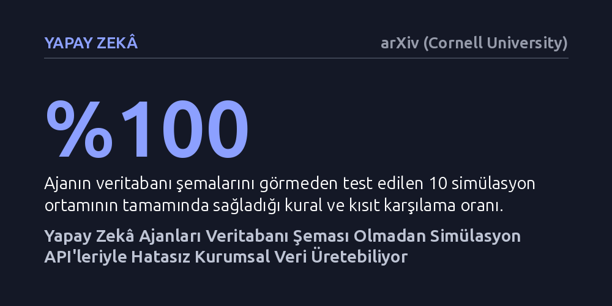

YAPAY-ZEKA · arXiv (Cornell University) · 2026-10-11
Kurumsal sistemlerdeki gizlilik ve şema kısıtlamalarını aşmak için yapay zekâ ajanlarının simüle edilmiş iş ortamlarındaki API'leri kullanarak sentetik veri üretip üretemeyeceği araştırıldı. Geliştirilen yöntem, veritabanı şemasına ihtiyaç duymadan on farklı iş ortamında kurallara yüzde yüz uyan ve yüksek dağılım benzerliğine sahip kurumsal veriler üretti.
Yapay zekâ modellerini eğitmek için şirketlerin gizli veritabanı şemalarına ya da gerçek müşteri verilerine muhtaç olunmadığını, simüle edilmiş iş kuralları üzerinden de güvenilir veri üretilebileceğini gösteriyor.

Araç kullanan yapay zekâ ajanları günümüzde kurumsal iş süreçlerinin merkezine yerleşiyor; ancak bu sistemleri büyük ölçekte eğitmek ve sınamak devasa bir engelle karşılaşıyor. Şirketlerin ticari sırları, yasal düzenlemeler ve veritabanı şemalarının dışarıya kapalı olması, araştırmacıların gerçek kurumsal verilere erişmesini neredeyse imkânsız kılıyor. Bu durum, kurumsal yapay zekâ modellerinin gelişimini ciddi biçimde yavaşlatıyor.
Mevcut sentetik tablo veri üretim yöntemleri ya karmaşık ilişkisel kuralları karşılayamıyor ya da her bir sektör için elle kural yazmayı gerektiriyor. Üstelik veritabanı şemasını doğrudan modele vermek de iş akışlarındaki sıkı bağımlılıkları çözmeye yetmiyor; küçük bir hata tüm veri bütünlüğünü bozabiliyor. Araştırmacılar, bu tıkanıklığı aşmak için şirketin gizli veritabanını hiç görmeden çalışan yeni bir yaklaşım arayışına girdi.
Yazarlar bu sorunu çözmek için 'Simülasyon Yoluyla Sentez' adını verdikleri yeni bir yaklaşım geliştirdi. Bu yöntemde büyük dil modeli tabanlı bir ajan, doğrudan veritabanı tablolarına yazmak yerine, kuralları ve kısıtları denetleyen yazılım arayüzleri (API) üzerinden işlem yapıyor. Yani ajan, tıpkı gerçek bir şirket çalışanı gibi sisteme bilet kesme, kayıt açma veya onay verme gibi operasyonel komutlar gönderiyor.
Sistem on farklı simüle edilmiş kurumsal iş ortamında denendi. Bu ortamlarda 'Genel Doldurucu' adı verilen alandan bağımsız bir ajan görevlendirildi. Ajanın veritabanı yapısını önceden bilmesine izin verilmedi; yalnızca sistemin izin verdiği kurallar çerçevesinde işlem yapması sağlandı ve üretilen verilerin tutarlılığı ile gerçekçi dağılımı ölçüldü.
Deneyler, simülasyon tabanlı yaklaşımın veritabanı şemasına hiç erişmeden on ortamın tamamında yüzde yüz kural ve kısıt karşılama başarısına ulaştığını gösterdi. Üretilen veriler, gerçek dünya kurumsal verilerinin marjinal dağılımına ortalama 0,88 benzerlik skoru yakalayarak yapısal kuralları bozmadan gerçekçi bir çeşitlilik sundu.
Karşılaştırmalı testlerde geleneksel istatistiksel veri üreticileri, başlangıç için gerçek çekirdek veriye ihtiyaç duydukları için on ortamın yedisinde hiç çalıştırılamadı. Daha da çarpıcısı, veritabanı şemasına doğrudan erişim yetkisi verilen klasik ajanlar, havayolu gibi sıkı bağlı iş akışlarında karmaşık görev adımlarını birbirine bağlayamayıp denemelerin yüzde 82'sinde başarısız oldu.
Bu bulgular, yapay zekâ modellerini eğitmek ve test etmek için şirketlerin mahrem verilerini dışarı çıkarma zorunluluğunun aşılabileceğini ortaya koyuyor. İş kurallarını uygulayan simülasyon arayüzleri sayesinde, yasal riskler almadan ve veritabanı mimarisini ifşa etmeden yüksek kaliteli sentetik kurumsal veri üretmek uygulanabilir bir seçenek haline geliyor.
Yine de çalışmanın getirdiği yaklaşım her derde deva değil. Sonuçların gerçek kurumsal sistemlere ne kadar kusursuz aktarılabileceği ve karmaşık kurumsal mantıkların simülasyona aktarım maliyeti gibi yanıtlanması gereken pratik uygulama soruları bulunuyor.